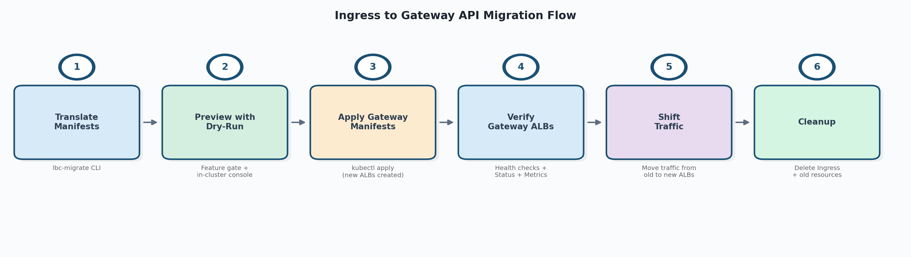
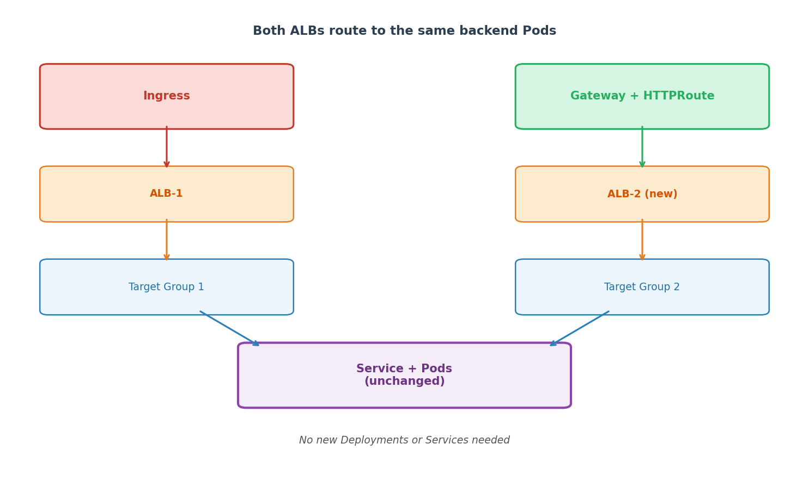
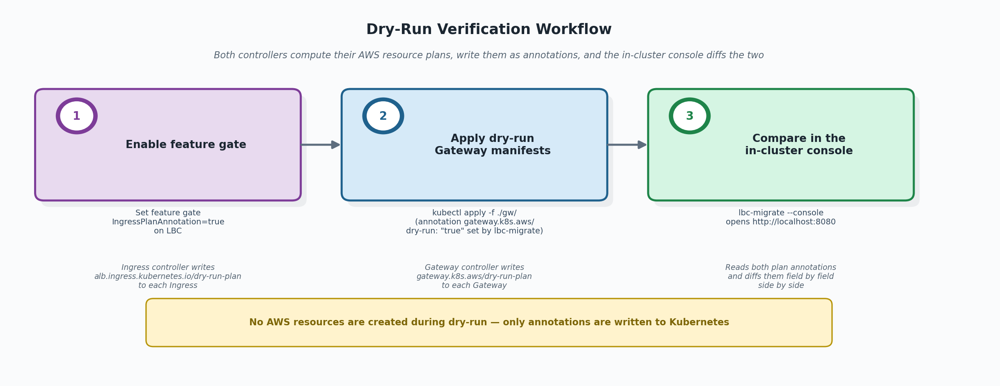

Migrate from Ingress to Gateway API¶
This guide covers migrating AWS Load Balancer Controller (LBC) Ingress resources to Gateway API, step by step. The migration is designed to be safe and non-disruptive — new ALBs are created alongside existing ones, so current workloads stay running throughout the process.
Two tools are provided to help:
lbc-migrateCLI — translates Ingress manifests (annotations, rules, groups) into equivalent Gateway API YAML.- Migration Console — a local web UI that compares the AWS resource plans produced by both the ingress and gateway controllers field by field, to verify equivalence before applying Gateway manifests for real.
Overview¶
The migration follows six steps. Each step is safe to pause at — you can stop and resume at any point.

| Step | Action | What happens | Rollback |
|---|---|---|---|
| 1 | Translate manifests | lbc-migrate converts Ingress YAML to Gateway API YAML |
Delete generated files |
| 2 | Preview with dry-run | Ingress controller writes its plan to annotation (requires feature gate). Gateway manifests applied with dry-run — gateway controller writes its plan without creating AWS resources. Console compares both plans. | Delete the dry-run Gateway |
| 3 | Apply Gateway manifests | LBC creates new ALBs for the Gateway resources alongside existing Ingress ALBs | Delete Gateway resources |
| 4 | Verify Gateway ALBs | Confirm new ALBs are healthy, configurations are correct, and metrics look normal | — |
| 5 | Shift traffic | Gradually move traffic from Ingress ALBs to Gateway ALBs | Shift traffic back |
| 6 | Cleanup | Delete Ingress and old resources | — |
What changes and what stays the same
The generated output replaces only your Ingress resource. Everything else stays untouched:
- Namespace — already exists, no changes needed.
- Deployment — unchanged, continues running your application pods.
- Service — unchanged, the new HTTPRoute
backendRefsreference it by name.

Prerequisites¶
- AWS Load Balancer Controller installed in the cluster with Gateway API support enabled
- The Gateway API CRDs installed at a compatible version (see Gateway API documentation)
lbc-migratebinary built (see Installation)- The tool assumes input Ingress resources are valid and currently working with the AWS Load Balancer Controller. It does not re-validate Ingress annotations.
Before you start¶
Before running lbc-migrate, scan your cluster for known limitations and read the relevant reference sections so you don't hit a silent blocker mid-migration:
- Annotation support — open the Annotation Support table and confirm none of your in-use annotations are listed as Not supported (in particular WAF Classic
waf-acl-id/web-acl-id, and allfrontend-nlb-*). If they are, resolve them before starting (e.g., migrate WAF Classic to WAFv2). - Known differences from Ingress — review Known Differences from Ingress, which covers
group.orderpriority handling, ALB rule count/priority differences, external Target Group references inactions.*, and limited support for some annotations. - Cross-namespace IngressGroups — if any IngressGroup spans multiple namespaces, see IngressGroup Support. You must use
--all-namespacesor list every namespace the group spans; otherwise the tool produces incomplete output. - Console RBAC — ensure the kubeconfig context you will run the migration console with has cluster-wide
listpermission on Gateways and Ingresses. See Migration Console — RBAC.
Step 1: Translate Manifests¶
First, install the lbc-migrate CLI if you haven't already:
# Build from the aws-load-balancer-controller repo
make lbc-migrate
# (Optional) Install on your PATH
make install-lbc-migrate
See Installation for details.
Then run lbc-migrate to convert your Ingress resources to Gateway API equivalents.
Quick start¶
# From YAML files
lbc-migrate -f ingress.yaml --output-dir ./gw/
# From a directory of manifests
lbc-migrate --input-dir ./k8s-manifests/ --output-dir ./gw/
# From a live cluster (recommended — automatically fetches referenced Services, IngressClass, etc.)
lbc-migrate --from-cluster --namespaces production --output-dir ./gw/
The tool generates Gateway, HTTPRoute, GatewayClass, and optional CRD resources (LoadBalancerConfiguration, TargetGroupConfiguration, ListenerRuleConfiguration).
Use --from-cluster for best results
File-based input may miss Service-level annotations and IngressClassParams overrides. --from-cluster automatically fetches all referenced resources for the most accurate translation.
Output: A directory of Gateway API YAML files ready to apply. By default, --dry-run=true is set, so the generated Gateway manifests include the gateway.k8s.aws/dry-run: "true" annotation.
For the full CLI reference (all flags, output formats, split modes, IngressGroup handling, annotation support table), see Migration Tool (lbc-migrate).
Step 2: Preview with Dry-Run¶
Before creating any AWS resources, verify that the generated Gateway manifests will produce the same ALB configuration as your current Ingress.

2a. Enable the Ingress plan annotation¶
The IngressPlanAnnotation feature gate makes the ingress controller publish its built model stack to each reconciled Ingress as alb.ingress.kubernetes.io/dry-run-plan. The in-cluster console reads this annotation. Turn it on by adding the gate to the controller's --feature-gates argument:
--feature-gates=IngressPlanAnnotation=true
If you installed LBC with the official Helm chart, set it through controllerConfig.featureGates (the chart converts the map into the --feature-gates flag automatically):
helm upgrade aws-load-balancer-controller eks/aws-load-balancer-controller \
-n kube-system \
--reuse-values \
--set controllerConfig.featureGates.IngressPlanAnnotation=true
The Helm upgrade restarts the controller pods automatically. For non-Helm installs (raw manifests, GitOps, etc.) edit the controller Deployment's args and roll the pods. See Configurations — Feature Gates for the full feature-gate reference.
Once the controller is running with the gate enabled, the ingress controller writes its built model stack to each reconciled Ingress as alb.ingress.kubernetes.io/dry-run-plan.
IngressGroup behavior
For an IngressGroup, all members share one plan. The controller writes the annotation only to the primary member (lowest group.order, tie-broken by lexical namespace/name).
2b. Apply the generated Gateway manifests¶
kubectl apply -f ./gw/gateway-resources.yaml
Because the Gateways carry gateway.k8s.aws/dry-run: "true", the gateway controller builds its model but does not create an ALB. It writes the plan back to the Gateway as gateway.k8s.aws/dry-run-plan. No AWS resources are created.
2c. Launch the migration console¶
lbc-migrate --console
# or bind to a different port
lbc-migrate --console --port 9000
Open http://localhost:8080 in your browser. The console reads both plan annotations and shows a field-by-field comparison of every AWS resource (LoadBalancer, Listeners, ListenerRules, TargetGroups, SecurityGroups) that each controller would create.
The console is read-only and uses your current kubeconfig context — it never modifies any cluster or AWS resources.
Look for:
- "Changed" diffs — fields that differ between ingress and gateway plans. Known migration artifacts (naming changes, health-check defaults) are filtered by default.
- "Added" / "Removed" — resources or fields present on only one side.
When to proceed
Review the diffs and confirm they are expected. Some differences are intentional (e.g., you deliberately changed a health-check path). As long as you understand and accept all listed changes, you can proceed to Step 3.
For the full console walkthrough (UI guide, diff classification, export, RBAC, troubleshooting), see Migration Console.
2d. (Optional) Inspect the raw plan¶
You can also inspect the plan annotation directly:
kubectl get gateway my-gateway \
-o jsonpath='{.metadata.annotations.gateway\.k8s\.aws/dry-run-plan}' | jq .
Step 3: Apply Gateway Manifests¶
Once you've confirmed the dry-run plan matches, you have two equivalent paths to switch the Gateway from dry-run to live. Pick one based on how you manage manifests:
Option A — regenerate without dry-run (recommended for GitOps). Produces a clean source-controlled manifest with no dry-run annotation:
# Regenerate without dry-run
lbc-migrate --from-cluster --namespaces production --output-dir ./gw/ --dry-run=false
# Apply
kubectl apply -f ./gw/gateway-resources.yaml
Option B — remove the dry-run annotation in place. Faster, but the cluster state diverges from your source-controlled YAML until you regenerate:
kubectl annotate -n <NAMESPACE> gateway <GATEWAY_NAME> gateway.k8s.aws/dry-run-
External Target Groups conflict
If your Ingress uses actions.* annotations that reference an external Target Group, the Gateway ALB cannot attach the same external TG that the Ingress ALB is currently using — only one ALB can own an external TG at a time. See External Target Group References in Actions for the resolution options before you apply.
What happens:
- LBC creates new ALBs for the Gateway resources (one per Gateway object)
- LBC creates new Target Groups pointing to the same Services/Pods
- Both your existing Ingress ALBs and the new Gateway ALBs now route to the same backend Pods
- Existing Ingress ALBs continue working as before — no disruption
Duplicate ALB cost during the migration window
Both the original Ingress ALBs and the new Gateway ALBs run in parallel for the duration of Steps 3–5. Expect duplicate ALB-hours and LCU-hours on your AWS bill until you complete cleanup in Step 6.
Service reuse
Gateway API HTTPRoute backendRefs point directly to your existing Kubernetes Services. No new Services, Deployments, or Pods are created. Both sets of ALBs register the same pod IPs.
Step 4: Verify Gateway ALBs¶
Before shifting traffic, confirm the new Gateway ALBs are healthy and correctly configured.
Check Gateway status¶
kubectl get gateway <GATEWAY_NAME> -n <NAMESPACE>
Look for:
Programmed: Truecondition — the ALB is fully provisionedstatus.addresses— contains the new ALB DNS name
Verify target group health¶
# Get the ALB ARN from Gateway status or AWS console
aws elbv2 describe-target-health --target-group-arn <TG_ARN>
All targets should show healthy.
Verify ALB configuration¶
In the AWS Console or via CLI, confirm:
- Listeners match expected ports and protocols
- Security groups are correct
- SSL certificates are attached
- WAF/Shield settings are in place (if applicable)
- Tags are correct
Monitor metrics¶
Check CloudWatch metrics for the new ALBs:
HealthyHostCount— all targets registered and healthyHTTPCode_ELB_5XX_Count— no unexpected 5xx errorsTargetResponseTime— latency within expected range
Test directly¶
# Get Gateway ALB DNS
GATEWAY_ALB=$(kubectl get gateway <GATEWAY_NAME> -n <NAMESPACE> \
-o jsonpath='{.status.addresses[0].value}')
# Test a request
curl -H "Host: your-app.example.com" http://$GATEWAY_ALB/health
Do not skip verification
Confirm the new ALBs serve correct responses and all configurations look right before shifting any production traffic.
Step 5: Shift Traffic¶
After verifying the new Gateway ALBs, shift production traffic from the Ingress ALBs to the Gateway ALBs.
Understand the traffic path before shifting
Before changing anything, identify how clients reach the Ingress ALB:
- Through a custom domain (e.g.,
api.example.com) backed by Route 53 or another DNS provider - Directly via the ALB DNS name (e.g.,
k8s-default-myingress-abc123...elb.amazonaws.com)
If clients use the ALB DNS directly, traffic cannot be shifted without updating every client. Plan accordingly.
The exact mechanism depends on your environment — DNS providers, load balancing services, and client configurations vary. Common considerations include the ability to roll back quickly if issues arise and whether gradual shifting is required for risk management.
For one example of CRD-based traffic management, see the LBC Global Accelerator documentation.
Refer to your DNS provider or traffic management tooling for specifics.
Step 6: Cleanup¶
After 100% traffic is on the Gateway ALBs and has been stable for your desired monitoring period:
Delete the Ingress¶
kubectl delete ingress <INGRESS_NAME> -n <NAMESPACE>
This triggers LBC to delete the Ingress ALB and its associated Target Groups.
Delete leftover dry-run Gateways¶
If in Step 3 you used Option A (regenerated without dry-run and applied a fresh manifest), the original dry-run Gateway from Step 2 may still exist alongside the live Gateway. Delete it:
If you used Option B (kubectl annotate to remove the dry-run annotation in place), the same Gateway object is now live — there is nothing extra to delete.
Disable the IngressPlanAnnotation feature gate¶
If no other migrations are in progress, turn the gate off so the ingress controller cleans up the dry-run-plan annotation. With the official Helm chart:
helm upgrade aws-load-balancer-controller eks/aws-load-balancer-controller \
-n kube-system \
--reuse-values \
--set controllerConfig.featureGates.IngressPlanAnnotation=false
For non-Helm installs, drop IngressPlanAnnotation=true from the controller's --feature-gates argument and roll the pods.
Clean up traffic management resources¶
Remove any resources you created in Step 5 to route traffic between the Ingress and Gateway ALBs once they are no longer needed.
Troubleshooting¶
For troubleshooting dry-run issues, see Dry-Run Mode. For console-specific issues, see Migration Console — Troubleshooting.
Further Reading¶
- Migration Tool (lbc-migrate) — full flag reference, annotation support table, output format details
- Migration Console — UI walkthrough, diff classification, export, RBAC
- Gateway API Overview — LBC's Gateway API support documentation
- Global Accelerator — AGA CRD for traffic splitting